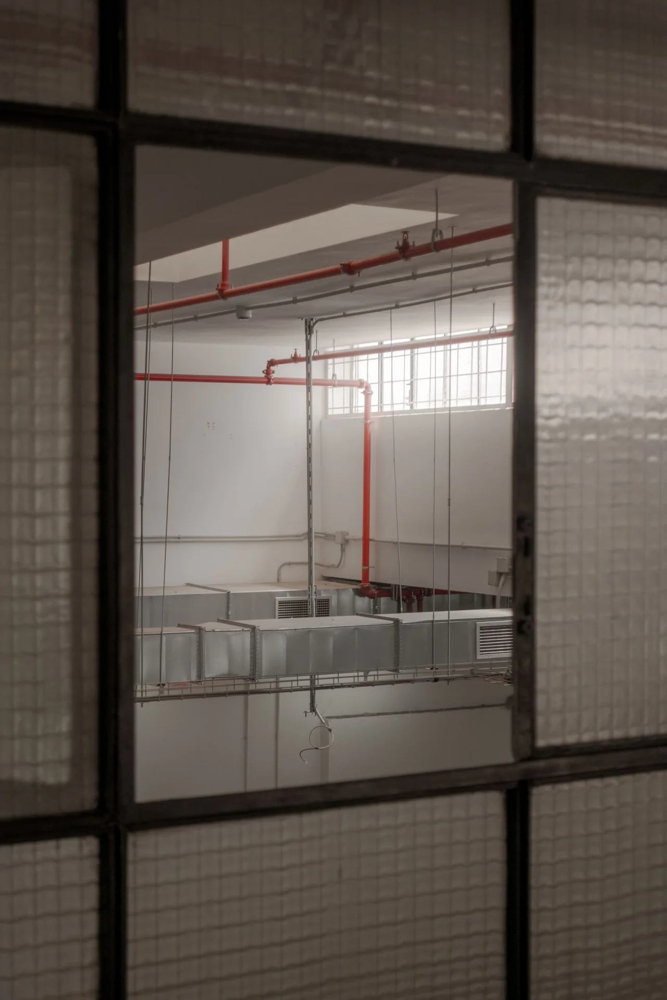

先に、暑い時間帯に測る
午後の稼働中に、作業者の立つ位置と天井付近の温度を測ります。機械の排気と、冷房の吹き出し方向も確認します。
工場の空調・換気
加工機のそばだけ暑い。機械を入れ替えてから熱がこもる。そんなときは、冷房を増やす前に、熱が出る場所と空気の流れを調べます。

改修プラン例
天井の吹き出し口から冷気は出ているものの、加工機の前は午後になると暑い。平日の稼働は止めずに、空調を見直す場合のプランです。
午後の稼働中に、作業者の立つ位置と天井付近の温度を測ります。機械の排気と、冷房の吹き出し方向も確認します。
加工機の近くから熱を逃がし、冷気は人が立つ側へ。既存の空調でまかなえるかを確認し、休業日に区画ごとに切り替えます。
作業者の立つ位置で温度を測り直します。外気温や機械の稼働状況も記録し、改修前と条件が近い測定結果を比べます。
暑くなる場所と時間帯を伺い、機械の位置や既存の空調・換気設備を確認します。
残す設備と交換する設備を分け、施工する区画と日数をお伝えします。
作業区画を引き渡す前に、空調と換気が計画どおり動くかを確認します。
現地調査のご相談
まずは暑さが気になる場所をお知らせください。次のことも、分かる範囲でお聞かせください。